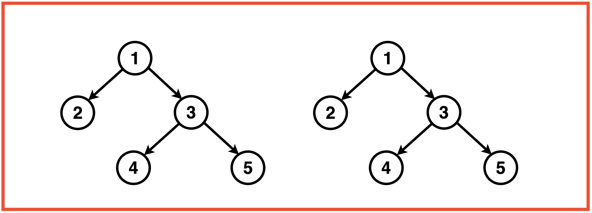
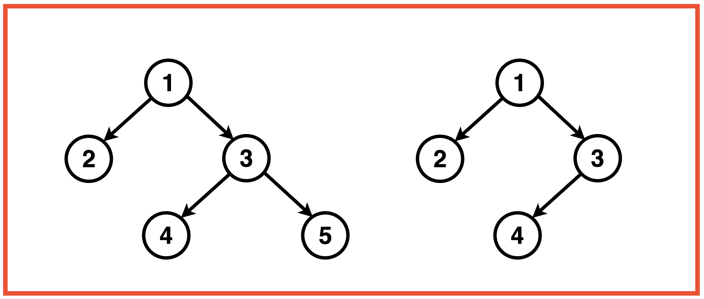
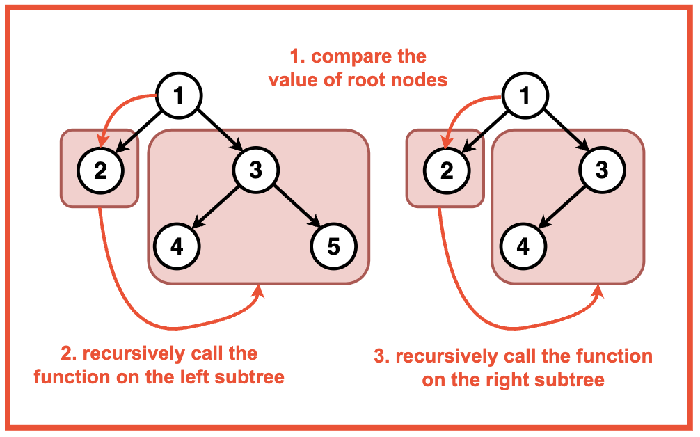
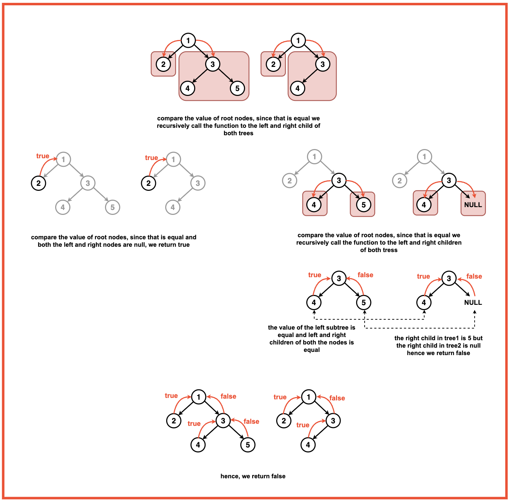

Problem Statement: Given two Binary Trees, return if true if the two trees are identical, otherwise return false.
Examples
Example 1:Input:Binary Tree 1: 1 2 3 -1 -1 4 5, Binary Tree 2: 1 2 3 -1 -1 4 5
Output: True, these trees are identical.Explanation: Two trees are said to be identical if these three conditions are met for every pair of nodes :'
Value of a node in the first tree is equal to the value of the corresponding node in the second tree.
Left subtree of this node is identical to the left subtree of the corresponding node.
Right subtree of this node is identical to the right subtree of the corresponding node.
Example 2:Input:Binary Tree 1: 1 2 3 -1 -1 4 5, Binary Tree 2: 1 2 3 -1 -1 4
Output : False, these trees are not identical.Explanation: The two binary trees are not identical because they fail to satisfy the third condition for every pair of nodes. Specifically, the right subtree of the corresponding nodes in the two trees is not identical.
In Binary Tree 1, the node with value 3 has a right subtree with nodes 4 and 5. However, in Binary Tree 2, the corresponding node with value 3 has a right subtree with only the node 4. Since the right subtrees are not the same, the two trees are not identical according to the given conditions.
Disclaimer: Don’t jump directly to the solution, try it out
yourself first.
Optimal Approach
Algorithm / Intuition
To determine if two binary trees are identical, we can follow a recursive approach. We traverse both trees in the preorder manner, meaning that the current node's value is checked before recursively traversing its left and right subtrees.

The idea is to traverse both trees simultaneously, comparing the values of corresponding nodes at each step. We need to ensure that the left subtree of each node in the first tree is identical to the left subtree of the corresponding node in the second tree, and similarly for the right subtrees.
Base Case: The base case for recursion is reached when both nodes are null, indicating the end of the subtree. In this case return true.
If only one of the nodes in null while the other is not or vice versa, return false since they cannot be identical.
Recursive Function:
Check if the values of the current nodes in both tree are equal. If not, return false otherwise check the conditions below.
Check if the left subtree of both the trees is identical or not by calling the recursive function on the left child.
Check if the right subtree of both the trees is identical or not by calling the recursive function on the right child.
If all recursive calls return true, indicating that the values and structures of the subtrees are identical, the function returns true, confirming that the entire trees are identical.

Algorithm:
Step 1: Start at the root node of both trees (node1 and node2).
Step 2: Check if the values of the current nodes in both trees are equal. If not return false.
Step 3: Recursively check the left then right subtree of the current node in both trees is identical.
Step 4: If all the recursive checks return true, then return the trees are identical, otherwise they are not.
Code
#include <iostream>
#include <algorithm>
#include <climits>
using namespace std;
// Node structure for the binary tree
struct Node {
int data;
Node* left;
Node* right;
// Constructor to initialize
// the node with a value
Node(int val) : data(val), left(nullptr), right(nullptr) {}
};
class Solution {
public:
// Function to check if two
// binary trees are identical
bool isIdentical(Node* node1, Node* node2){
// If both nodes are NULL,
// they are identical
if(node1 == NULL && node2 == NULL){
return true;
}
// If only one of the nodes is
// NULL, they are not identical
if( node1== NULL || node2==NULL){
return false;
}
// Check if the current nodes
// have the same data value
// and recursively check their
// left and right subtrees
return ((node1->data == node2->data)
&& isIdentical(node1->left, node2->left)
&& isIdentical(node1->right, node2->right));
}
};
int main() {
// Node1
Node* root1 = new Node(1);
root1->left = new Node(2);
root1->right = new Node(3);
root1->left->left = new Node(4);
// Node2
Node* root2 = new Node(1);
root2->left = new Node(2);
root2->right = new Node(3);
root2->left->left = new Node(4);
Solution solution;
if (solution.isIdentical(root1, root2)) {
cout << "The binary trees are identical." << endl;
} else {
cout << "The binary trees are not identical." << endl;
}
return 0;
}
// Node structure for the binary tree
class Node {
int data;
Node left;
Node right;
// Constructor to initialize
// the node with a value
public Node(int val) {
data = val;
left = null;
right = null;
}
}
public class Solution {
// Function to check if two
// binary trees are identical
public boolean isIdentical(Node node1, Node node2) {
// If both nodes are NULL,
// they are identical
if (node1 == null && node2 == null) {
return true;
}
// If only one of the nodes is
// NULL, they are not identical
if (node1 == null || node2 == null) {
return false;
}
// Check if the current nodes
// have the same data value
// and recursively check their
// left and right subtrees
return ((node1.data == node2.data)
&& isIdentical(node1.left, node2.left)
&& isIdentical(node1.right, node2.right));
}
public static void main(String[] args) {
// Node1
Node root1 = new Node(1);
root1.left = new Node(2);
root1.right = new Node(3);
root1.left.left = new Node(4);
// Node2
Node root2 = new Node(1);
root2.left = new Node(2);
root2.right = new Node(3);
root2.left.left = new Node(4);
Solution solution = new Solution();
if (solution.isIdentical(root1, root2)) {
System.out.println("The binary trees are identical.");
} else {
System.out.println("The binary trees are not identical.");
}
}
}
# Node structure for the binary tree
class Node:
def __init__(self, val):
self.data = val
self.left = None
self.right = None
# Solution class with a function to check if two binary trees are identical
class Solution:
def isIdentical(self, node1, node2):
# If both nodes are None, they are identical
if node1 is None and node2 is None:
return True
# If only one of the nodes is None, they are not identical
if node1 is None or node2 is None:
return False
# Check if the current nodes have the same data value
# and recursively check their left and right subtrees
return (node1.data == node2.data
and self.isIdentical(node1.left, node2.left)
and self.isIdentical(node1.right, node2.right))
# Creating nodes for binary trees in Python
root1 = Node(1)
root1.left = Node(2)
root1.right = Node(3)
root1.left.left = Node(4)
root2 = Node(1)
root2.left = Node(2)
root2.right = Node(3)
root2.left.left = Node(4)
# Creating an instance of the Solution class
solution = Solution()
# Checking if the binary trees are identical
if solution.isIdentical(root1, root2):
print("The binary trees are identical.")
else:
print("The binary trees are not identical.")
// Node structure for the binary tree
class Node {
constructor(val) {
this.data = val;
this.left = null;
this.right = null;
}
}
class Solution {
// Function to check if two binary trees are identical
isIdentical(node1, node2) {
// If both nodes are NULL, they are identical
if (node1 === null && node2 === null) {
return true;
}
// If only one of the nodes is NULL, they are not identical
if (node1 === null || node2 === null) {
return false;
}
// Check if the current nodes have the same data value
// and recursively check their left and right subtrees
return (
node1.data === node2.data &&
this.isIdentical(node1.left, node2.left) &&
this.isIdentical(node1.right, node2.right)
);
}
}
// Main function
function main() {
// Node1
let root1 = new Node(1);
root1.left = new Node(2);
root1.right = new Node(3);
root1.left.left = new Node(4);
// Node2
let root2 = new Node(1);
root2.left = new Node(2);
root2.right = new Node(3);
root2.left.left = new Node(4);
let solution = new Solution();
// Check if binary trees are identical
if (solution.isIdentical(root1, root2)) {
console.log("The binary trees are identical.");
} else {
console.log("The binary trees are not identical.");
}
}
// Run the main function
main();
Output
The binary trees are identical.
Complexity Analysis
Time Complexity: O(N+M) where N is the number of nodes in the first Binary Tree and M is the number of nodes in the second Binary Tree. This complexity arises from visiting each node of the two binary nodes during their comparison.
Space Complexity: O(1) as no additional space or data structures is created that is proportional to the input size of the tree.
O(H) Recursive Stack Auxiliary Space : The recursion stack space is determined by the maximum depth of the recursion, which is the height of the binary tree denoted as H. In the balanced case it is log2N and in the worst case (its N).
Video Explanation
Special thanks to Gauri Tomar for contributing to this article on takeUforward. If you also wish to share your knowledge with the takeUforward fam, please check out this article